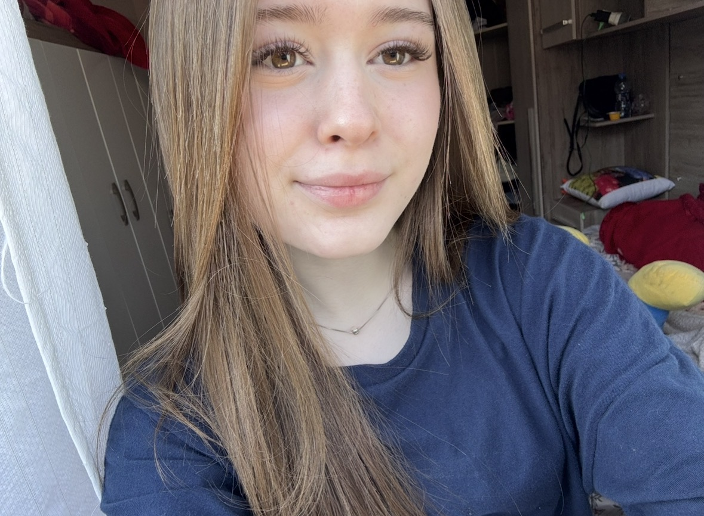

✦ Oii, bem-vinda ao: ✦
Meu Portfólio
Meu nome é Ana Clara ♡
Esse é o meu portfólio, e aqui vc pode conhecer um pouco sobre quem eu sou, como é minha vida escolar, e alguns dos meus projetos.
✦ Oii, bem-vinda ao: ✦
Meu nome é Ana Clara ♡
Esse é o meu portfólio, e aqui vc pode conhecer um pouco sobre quem eu sou, como é minha vida escolar, e alguns dos meus projetos.
✦ Um pouquinho sobre mim ✦

Essa na imagem sou Eu ♡
Tenho 16 anos.
Eu amo gatinhos, e tenho 3 gatinhas: nina, belinha e mel.
O meu hobby favorito é assistir animes e colecionar cartinhas pokemon (Bem nerdola).
No turno da noite eu trabalho na pizzaria do meu pai, e a tarde gosto de jogar bola,sair fazer comprinhas, ou dormir.
Atualmente estou no 2* ano do ensino médio. Estudo no colégio CCM Elias Abrahão, e estou no curso de Desenvolvimento de sistemas.